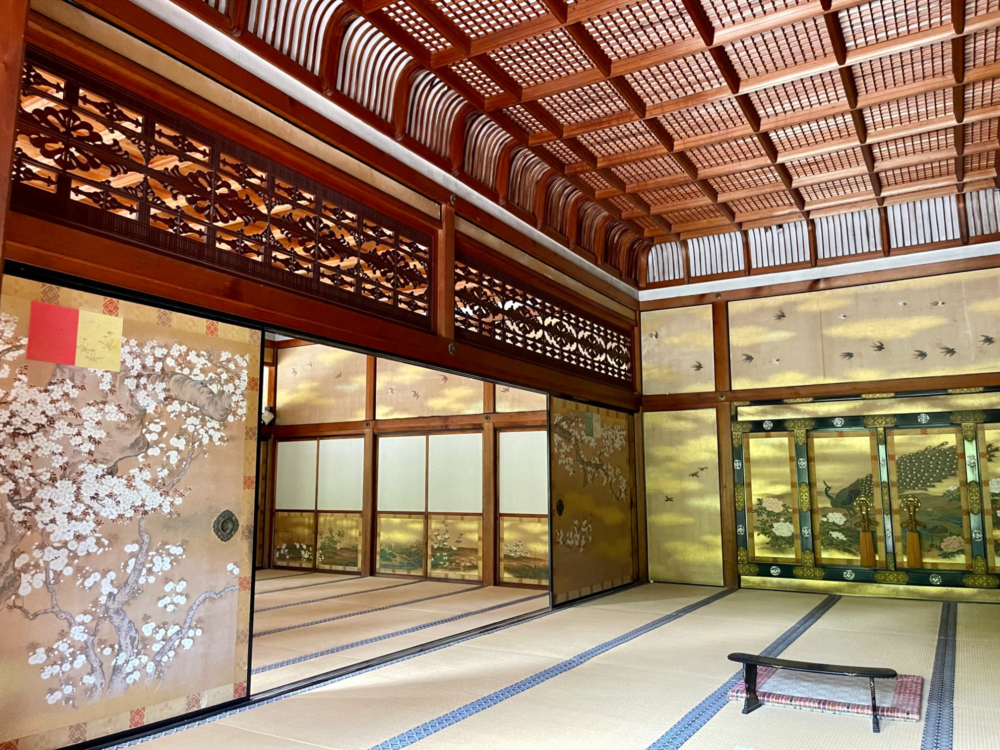
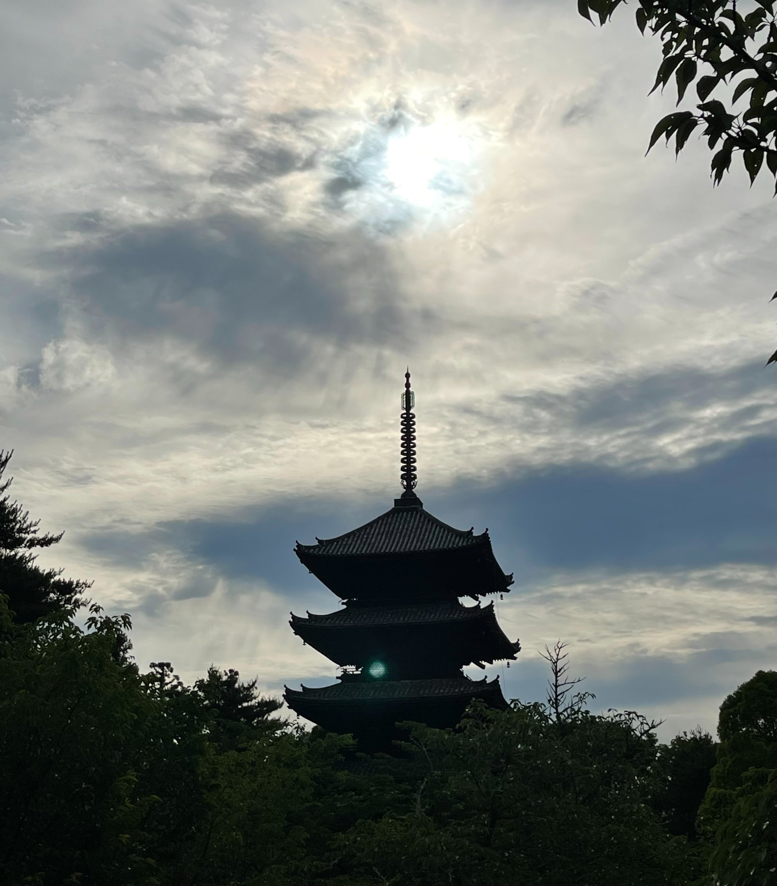
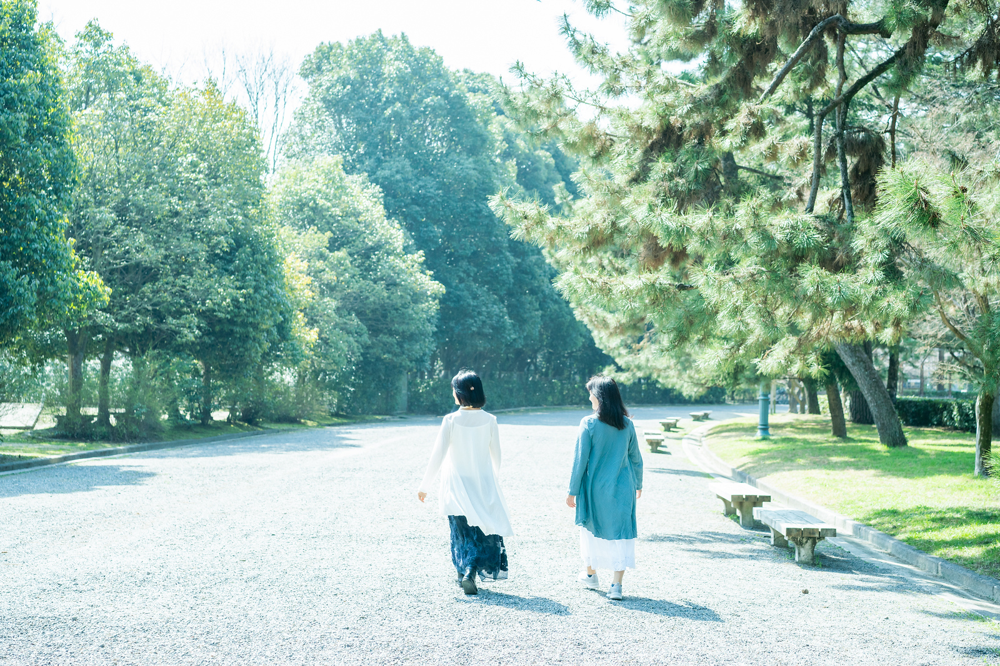

京都御所
嵐山の上流・大堰川の夜明け

出雲大神宮
ご褒美旅行から帰って、
1日で元に戻ってしまう。
あの解放感、あの美味しさ、あの眠り。なのに月曜日には、また同じ重さが戻ってくる。リセットしたはずなのに、どこかリセットできていない感覚。
高級ホテルに泊まっても、
深く眠れない。
ベッドは最高。環境は完璧。それでもぐっすり眠れなかった。思考が止まらない。仕事のこと、明日のこと……身体は休んでいるのに、脳だけが全速力で動いている感じ。
癒やしは知っている。
でも、まだもっと何かを期待している。
マッサージも、アロマも、瞑想も。いいものは全部試した。それでも「本当に癒やされた」という感覚が、どこかいつも遠い。
それは、「脳が疲れ果てている」サインです。
どれだけ上質な時間を重ねても、脳が疲れたままでは
本当の回復は訪れません。
カギは、「幸せホルモン」と呼ばれるセロトニンです。
セロトニンは、睡眠改善だけでなく、自律神経の調整・感情の安定・日中のパフォーマンス向上にも深く関わっています。そして夜の深い眠りを作る「メラトニン」の原料になる物質です。ストレスの多い現代生活では、このセロトニンが慢性的に少なくなっています。
そのセロトニンを、薬を使わず自然に活性化できるのが——セロトニン活性療法です。
一般的なマッサージは筋肉や血行に働きかけます。でも、不眠や慢性疲労の根本は「脳の疲れ」です。筋肉をほぐしても、脳疲労は取れません。
セロトニン活性療法は、背中・頭・お顔などを優しくなでる・さする・ゆらすタッチケアで、セロトニンの活性を促します。強い圧は不要なので、どなたにでも安心して受けていただけます。
セロトニンは日が落ちるとメラトニンに変換されます。
セロトニンを増やすことが、快眠への最短経路です。
※ 当サービス受講者アンケートに基づく（自社調べ）。個人差があります。
嵐山でも、金閣寺でも、御所でおしゃべりしながらでも。お客様がお選びになった京都の場所で、歩きながら呼吸・歩幅・リズムを整える「屋外歩行セラピー」です。
ただ歩くだけではありません。呼吸・歩幅・リズムのちょっとしたコツをお伝えしながら一緒に歩きます。それだけで、同じ京都の道が「脳を整える時間」に変わります。
また、日常から切り離された京都の景色・空気・静けさが、頭の中でぐるぐると回り続けているストレスの回路を、自然にリセットしてくれます。「頑張って治す」のではなく、「遊んでいたらラクになっていた」——それがこのセッションの核心です。
散歩しながら、施術の前後に、ただおしゃべりする時間があります。京都の景色を眺めながら、気の向くままに話してください。
誰かと笑ったり、共感し合える会話は、それ自体がセロトニンを活性化します。「井戸端会議」がなぜか気持ちいいのは、科学的にも理由があるのです。
どんな話でも、安心して話せる時間にします。



「肩こりのことは何も言っていないのに、気づいたら30年来の辛さが消えていた。」
「イライラしなくなった、と家族に言われた。」
「ただ癒やされたくて来たのに、久しぶりにぐっすり眠れた。」
セロトニンが整うと、睡眠だけでなく体と心に連鎖的な変化が起きます。9割近くの方が、予想していなかった嬉しい変化を複合的に感じています。
眠れないことだけが悩みじゃなくても、ここに来る理由があるかもしれません。
「癒やされた」ではなく「変わった」という声をいただいています。
中途覚醒がなくなり、朝スッキリ起きられるようになりました。帰ってからも調子の良い状態が続いています。
どんどん調子が良くなる感じが続きました。睡眠だけでなく、気持ちの面でもとても楽になりました。
一回でも変化を感じましたが、4日間続けることでの体感は明らかに違いました。また参加したいです。
仕事のストレスで眠れない日々でしたが、プログラム後は久しぶりに熟睡できました。

生まれも育ちも京都です。観光客には見えない路地の奥も、季節ごとの光の変わり方も、地元の人だけが知っている朝の空気感も——そんな私にとっての日常をお届けいたします。
ご一緒に相談しながら決めた京都の場所で、歩きながら施術を行う、京都人ならではのセッションです。
施術歴28年。エステ・リラクゼーションを経て、8年前にセロトニン活性療法と出会い、快眠・自律神経ケアの専門家として活動しています。沖縄・西表島での3泊4日リトリートを8年継続主宰してきた経験と、地元民の私が案内するといつも喜んでもらえるので、そんな京都を楽しんでいただきたいという思いが重なったのが、このプログラムです。
まずはフォームからお気軽にどうぞ。
内容を確認の上、2営業日以内にご連絡いたします。
フォーム送信後、数日経っても返信がない場合は、
メールが届いていない可能性がございます。
大変お手数ですが、お電話にてご連絡いただけますと幸いです。
TEL
※ 携帯電話でドメイン指定受信を設定されている場合は、
「@nagomi.net」からのメールを受け取れるよう設定をお願いいたします。
和 nagomi Premium LINE
フォームのほか、LINEでもお気軽にご連絡ください。
「スリープツーリズム」は、これからのラグジュアリー旅行において世界的に注目されているカテゴリーです。京都でこのプログラムを提供しているのは、現在このサービスのみです。
現在、京都のホテル・旅行会社様を対象に、先行導入パートナーを募集しています。宿泊ゲストへの新しい付加価値として、ぜひご検討ください。
宿泊ゲストの客室で施術を実施。ホテル側の設備・スタッフの手間は一切不要です。
「京都スリープツーリズム」として旅行プランに組み込み、他にはない体験価値をご提案いただけます。
先行導入の条件・価格はご相談ベースで対応いたします。まずはお気軽にご連絡ください。
内容を確認の上、2営業日以内にご連絡いたします。